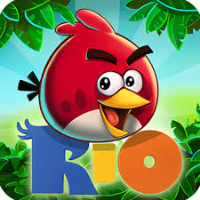

Bem-vindo à fase das montanhas!
Angry Birds Rio é um jogo spin-off da série Angry Birds, lançado em 2011 como parte de uma parceria promocional com o filme de animação da 20th Century Fox, também chamado Rio. O jogo leva os pássaros da série original para o Brasil, onde eles encontram novos desafios e personagens.
A trama de Angry Birds Rio começa quando os pássaros originais são capturados por contrabandistas e levados para o Rio de Janeiro. Lá, eles conseguem escapar e unem forças com os protagonistas do filme Rio, Blu e Jade, para salvar os pássaros exóticos, como araras e outras aves, que estão presos em gaiolas. A missão dos jogadores é derrubar as estruturas dos contrabandistas e dos macacos-vilões.